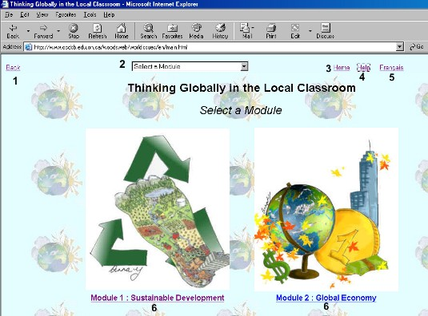
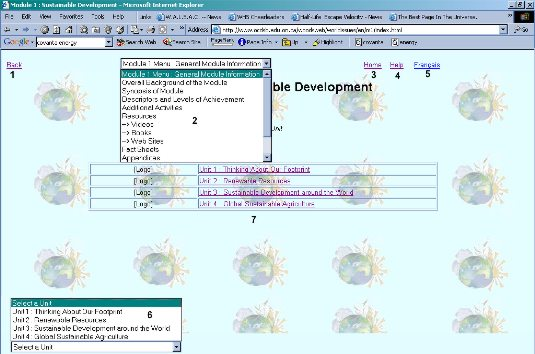

Thinking Globally in the Local Classroom - Help
Here you will find each of the main pages and how to navigate around them. If you have any questions about navigating the page, you should ask the webmaster. Any questions that are asked and are valid will be posted on a FAQ (Frequently Asked Questions) page where other people will be able to see them.
Module Selection Screen

| Item Number | Item Name | Function |
| 1 | Back Button | Click this link to go back one page. This link does the same as the back button on your browser. |
| 2 | Module Selection Drop Down | This menu has the selections to choose the module you wish to view. |
| 3 | Home Button | Click this link to go to the main entrance page. |
| 4 | Help Button | Click this to bring you to the page you are viewing now. |
| 5 | Français Button | Click this to go to the French Module Selection Page. |
| 6 | Module Selection | Click the module you wish to open. |
Unit Selection Screen

| Item Number | Item Name |
Function |
| 1 | Back Button | Click this link to go back one page. This link does the same as the back button on your browser. |
| 2 | Module Drop Down Menu | The module drop down menu allows you to jump to another module at any time. Also for the current module it allows you to view all of the General Module Information Pages. |
| 3 | Home Button | Click this link to go to the main entrance page. |
| 4 | Help Button | Click this to bring you to the page you are viewing now. |
| 5 | Français Button | Click this to go to the French Module Selection Page. |
| 6 | Unit Drop Down Menu | Use this drop down menu to select the unit you wish to access. Once a unit is active, you can access the Activity and Teacher Support Pages from here. |
| 7 | Unit Selection | Choose a unit without using any of the drop down menu's. |